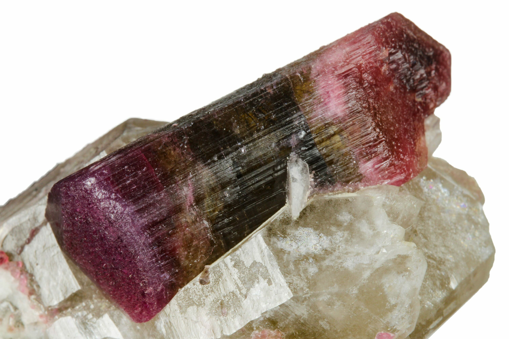
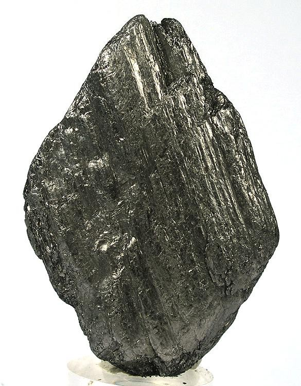

New here?

New to rockhounding and don't know where to start? Not to worry, we will show you the ropes. Click below to head over to our "Getting Started" guide
Getting StartedRocks & Minerals In Massachusetts


Massachusetts rockhounding maps to hunt for crystals, gemstones, minerals, and ores. Massachusetts is home to numerous rockhounding locations where collectors can find a variety of minerals, including beryl, garnet, and schorl. The state's rich mining history and diverse geological landscape offer a range of collecting experiences, from the old Chester Emery Mines to the Granite City area.
Sponsored Dig Site

Own a digsite you would like to advertize in Massachusetts? Contact us for more information about being our sponsor of the month! Email sponsors@rockhounding.org for more information.
Advertise With Us
Please always bring appropriate attire and do research before venturing out to rock hunt and crystal hunt. Also, be sure to verify that the location you want to hunt at is available for public access. Rockhounding.org does our best to verify, but it is your responsibility to verify as well because sometimes things change. We are not liable for any actions you take from the information you find on this site.
Snacks & Hydration

Energy Bars
Stay energized with the best energy bars for your rockhounding adventures.
Our Favorites

Must Have Rockhounding Tools


Keeping accurate records of Rockhounding & Gemstone Hunting Locations is a community effort! Know of a good spot that is missing from our maps? Feel free to submit it below. Thank you for your contributions to the rockhounding community!
Popular Rocks, Crystals, & Gemstones In Massachusetts
-
 Babingtonite
BabingtoniteBabingtonite is a rare and interesting mineral that can be found in Massachusetts, particularly in the areas around Westfield and Lane's Quarry. This dark green to black mineral is known for its distinctive crystal forms and is highly prized by collectors.
Read More -
 Beryl
BerylBeryl, including its popular varieties such as aquamarine and emerald, can be found in Massachusetts. These beautiful gemstones are often found in granite pegmatites throughout the state and are sought after for their vibrant colors and crystal forms.
Read More -

Tourmaline
Tourmaline is a popular gemstone found in Massachusetts, particularly in the areas around Worcester and Berkshire counties. This colorful mineral can be found in various shades, such as pink, green, and black, and is prized for its crystal forms and vibrant colors.
Read More -
 Fossils
FossilsMassachusetts offers a variety of opportunities for fossil hunting, particularly in the Connecticut River Valley. Here, collectors can find plant fossils, fish fossils, and even dinosaur footprints that date back millions of years.
Read More -
 Fluorite
FluoriteFluorite is a colorful mineral that can be found in various locations in Massachusetts. This mineral, known for its cubic crystal forms and vibrant colors ranging from purple to green, is often found in granite pegmatites and is popular among collectors.
Read More -
 Garnet
GarnetGarnet is a popular gemstone that can be found in various locations in Massachusetts, particularly in the areas surrounding the Berkshire Hills. Collectors can find both red and green varieties of garnet, which are prized for their vibrant colors and crystal forms.
Read More -

Graphite
Graphite, a naturally occurring form of carbon, can be found in various locations in Massachusetts. Known for its metallic luster and dark color, graphite is often found in metamorphic rocks such as schist and marble, and it is used in a variety of industrial applications.
Read More -
 Quartz
QuartzQuartz is a common mineral found throughout Massachusetts. Collectors can find many different varieties of quartz, such as amethyst, smoky quartz, and clear quartz, in various locations throughout the state, including granite pegmatites and hydrothermal veins.
Read More -
 Rhodonite
RhodoniteRhodonite, a pink to red manganese silicate mineral, can be found in Massachusetts, particularly in the areas around Plainfield and Easthampton. This beautiful mineral is known for its vibrant color and is often used as a decorative stone or in jewelry.
Read More -
 Schorl
SchorlSchorl, a black variety of tourmaline, is found in various locations in Massachusetts. This dark and lustrous mineral is often found in granite pegmatites and is highly sought after by collectors due to its interesting crystal forms and associations with other colorful minerals.
Read More
Popular Rock Hunting Areas In Massachusetts
-
 Western Massachusetts Mineral Localities
Western Massachusetts Mineral LocalitiesWestern Massachusetts Mineral Localities are known for their deposits of quartz, pyrite, and other minerals, which can be found at various abandoned mines and quarries in the area.
Read More -
Gillette Quarry
Gillette Quarry in Haddam Neck, Connecticut, is a popular location for rockhounding, where visitors can find various minerals like beryl, garnet, and schorl tourmaline in the granite pegmatite.
Read More -
Glendon Quarry
Glendon Quarry in Massachusetts offers opportunities for rockhounding enthusiasts to search for minerals like apatite, garnet, and albite in the granite pegmatite found in the quarry.
Read More -
Road cuts along Route 2
Along Route 2 in Massachusetts, several road cuts expose the bedrock, providing opportunities for rockhounding enthusiasts to search for minerals like quartz, feldspar, and mica among the granite and schist formations.
Read More -
Herb Perone's Field Trip Locations
Herb Perone's Field Trip Locations in Massachusetts are popular for rockhounding, where visitors can find various minerals like garnet, tourmaline, and quartz in the granite pegmatite.
Read More -
Bancroft Mineral Collecting Area
The Bancroft Mineral Collecting Area in Ontario, Canada, is a popular location for rockhounding enthusiasts, offering opportunities to find minerals like apatite, titanite, and biotite in the granite pegmatite formations.
Read More
Geology of Massachusetts
The geologic history of Massachusetts began over a billion years ago with the formation of the ancient rocks that make up the core of the state. Several orogenies during the Paleozoic Era, including the Taconic, Acadian, and Alleghenian, contributed to the formation of the Appalachian Mountains.
Massachusetts is known for its diverse geology, including the famous pegmatite intrusions, which host numerous gem-quality minerals. The last Ice Age further shaped the state's landscape, leaving behind glacial deposits, erratics, and the distinctive Cape Cod peninsula